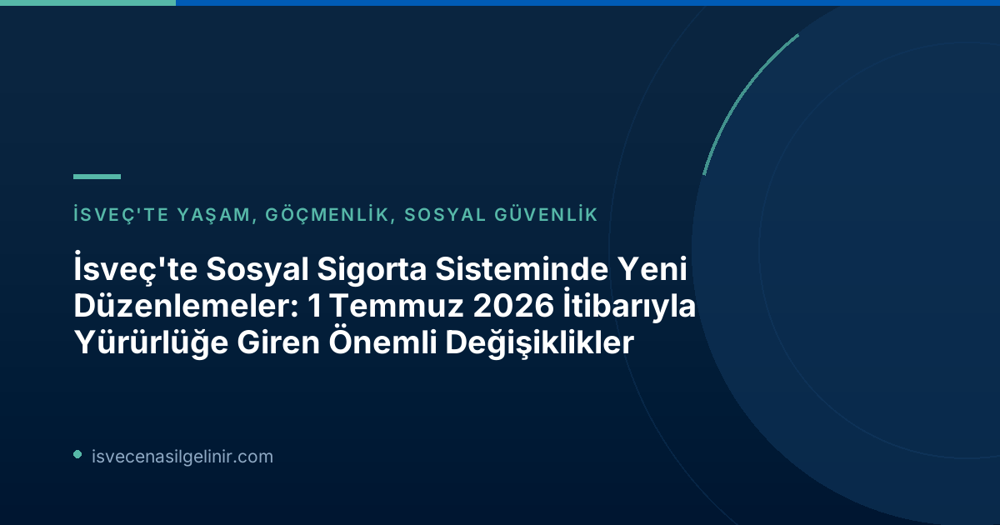

Yeni Düzenlemelerin Arka Planı ve Amacı
İsveç Riksdag'ı (Parlamento) tarafından alınan kararlar doğrultusunda, 1 Temmuz 2026 itibarıyla İsveç sosyal sigorta sisteminde üç önemli yasa değişikliği yürürlüğe girmiştir. Bu değişikliklerin temel amacı, sosyal güvenlik sisteminin suistimal edilmesini önlemek ve vatandaşların sisteme olan güvenini artırmaktır. Özellikle hatalı ödemelerin ve fayda dolandırıcılığının azaltılmasına yönelik iki düzenleme ön plana çıkmaktadır.
Yanlış Ödemelerde Yaptırım Ücreti (Sanktionsavgift)
Nedir ve Kimleri Kapsar?
1 Temmuz 2026 tarihinden itibaren Försäkringskassan ve Pensionsmyndigheten, kişilerin yanlış bilgi vermesi veya değişen koşulları bildirmemesi sonucunda gerçekleşen hatalı ödemeler için bir yaptırım ücreti uygulama yetkisine sahip olacaktır. Bu uygulama, bireylerin beyan sorumluluğunu artırmayı ve sosyal yardımların doğru kişilere, doğru miktarda ulaşmasını sağlamayı hedeflemektedir.
Yaptırım Ücreti Nasıl Hesaplanır?
Yaptırım ücretinin hesaplanması belirli kurallara tabidir. Hem verilen yanlış bilginin hem de kasıtlı olmamanın ödeme yanlışlığına yol açması durumunda uygulanabilir.
Yaptırım Ücreti Detayları
- Uygulayıcı Kurumlar: Försäkringskassan ve Pensionsmyndigheten
- Uygulama Tarihi: 1 Temmuz 2026 itibarıyla
- Kapsam: Yanlış bilgi verilmesi veya değişen koşulların bildirilmemesi sonucu oluşan hatalı ödemeler.
- Ücret Oranı: Hatalı ödenen ve geri ödenmesi gereken miktarın %25'i.
- Minimum Ücret: En az 2.368 SEK (fiyat taban miktarının %4'ü).
- Amaç: Hatalı ödemeleri azaltmak ve refah sistemlerine olan güveni güçlendirmek.
Hileli Beyan ve Kasıtlı Yanlış Beyanlara Karşı Yeni Engel: Bidragsspärr
Fayda Engeli Nedir?
Sosyal sigorta sisteminde kötüye kullanımı engellemeyi amaçlayan bir diğer önemli değişiklik ise "Bidragsspärr" yani fayda engeli uygulamasıdır. Bu yeni yaptırım, sosyal sigorta kapsamında hatalı ödemelere kasıtlı olarak veya ağır ihmal sonucu neden olan kişilerin belirli yardımlardan belirli bir süre mahrum bırakılmasını öngörüyor.
Engel Süresi ve Kapsamı
Uygulanacak fayda engeli süresi, koşullara bağlı olarak birkaç aydan üç yıla kadar değişebilmektedir. Riksdag'ın bu düzenlemedeki amacı, sosyal sigorta sistemlerinin sistematik kötüye kullanımına karşı daha güçlü bir koruma mekanizması oluşturmaktır. İsveç'teki sosyal yardımlar ve vatandaşlık başvuruları arasındaki ilişki hakkında daha fazla bilgi için sverigemedborgarskapsprov.com adresini ziyaret edebilirsiniz.
Ebeveyn Parası (Föräldrapenning) Başvurularında Kolaylık
Başvuru Sürecindeki Basitleştirme
Tüm bu yaptırım odaklı düzenlemelerin yanı sıra, Föräldrapenning (ebeveyn parası) başvuru sürecine yönelik olumlu bir basitleştirme de yapılmıştır. 1 Temmuz 2026 itibarıyla, ebeveyn izni kullanmak isteyen kişilerin artık Försäkringskassan'a önceden bildirimde bulunma zorunluluğu kaldırılmıştır. Artık doğrudan ebeveyn parası başvurusu yapmak yeterli olacaktır.
Bu Değişikliğin Önemi
Hükümetin bu kararı, ebeveynlerin ve ailelerin idari yükünü azaltmayı, başvuru sürecini daha pratik ve erişilebilir hale getirmeyi hedeflemektedir. Bu değişiklik, özellikle yeni ebeveynler için önemli bir kolaylık sağlayacaktır.
Bu Değişiklikler Sizi Nasıl Etkileyecek?
İsveç'te yaşayan veya yaşamayı planlayan herkesin bu yasa değişikliklerinin farkında olması önemlidir. Özellikle sosyal yardımlardan faydalananlar veya gelecekte faydalanmayı düşünenler için doğru ve eksiksiz bilgi beyan etmek, değişen koşulları zamanında bildirmek büyük önem taşımaktadır. Yeni düzenlemeler, sistemin adil ve sürdürülebilir bir şekilde işlemesine katkıda bulunurken, aynı zamanda kişilerin sorumluluklarını da artırmaktadır.
Sonuç ve Önemli Hatırlatmalar
İsveç sosyal sigorta sistemindeki bu güncel değişiklikler, özellikle dolandırıcılık ve yanlış ödemelerle mücadele etme konusunda önemli adımlar atmaktadır. Ebeveyn parası başvurusundaki kolaylık ise bürokratik süreçleri basitleştiren olumlu bir gelişmedir. Her zaman olduğu gibi, en güncel ve doğru bilgi için Försäkringskassan ve diğer resmi kurumların duyurularını takip etmek büyük önem taşımaktadır.
Referanslar:
İsveç'teki Sosyal Haklarınızı Öğrenin!
İsveç'in karmaşık sosyal güvenlik sistemi hakkında merak ettikleriniz mi var? Haklarınızı ve yükümlülüklerinizi anlamak, geleceğiniz için atacağınız en önemli adımlardandır. Detaylı bilgi almak ve güncel düzenlemelerden haberdar olmak için kaynakları inceleyin.